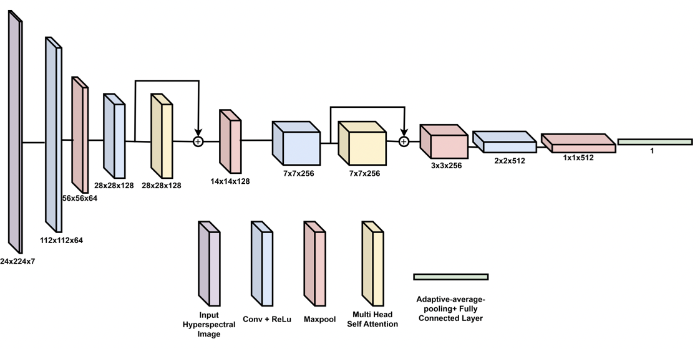
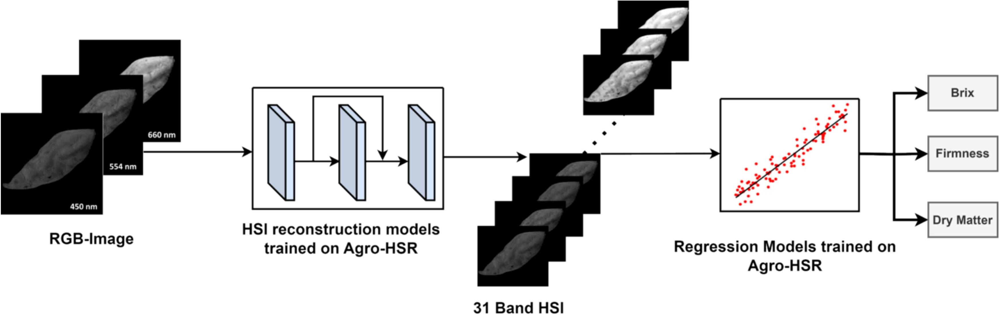
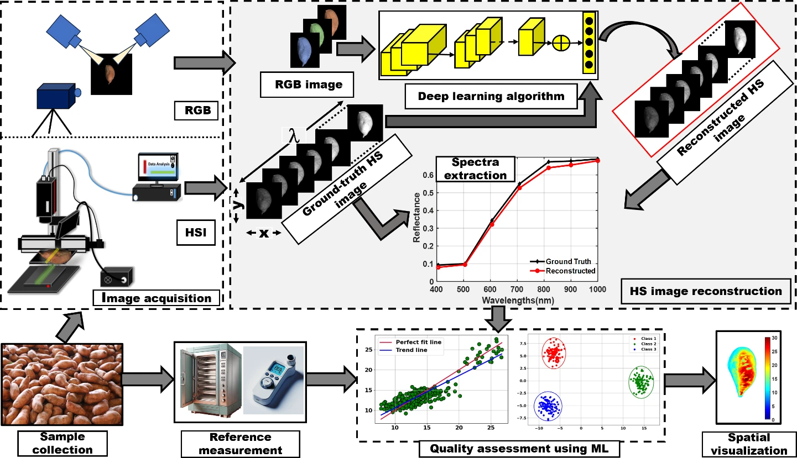
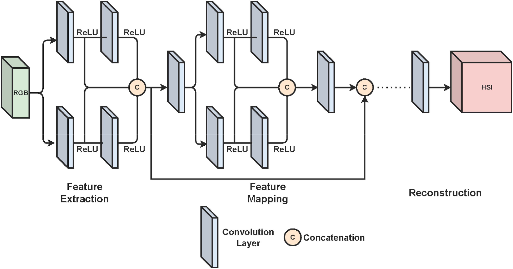
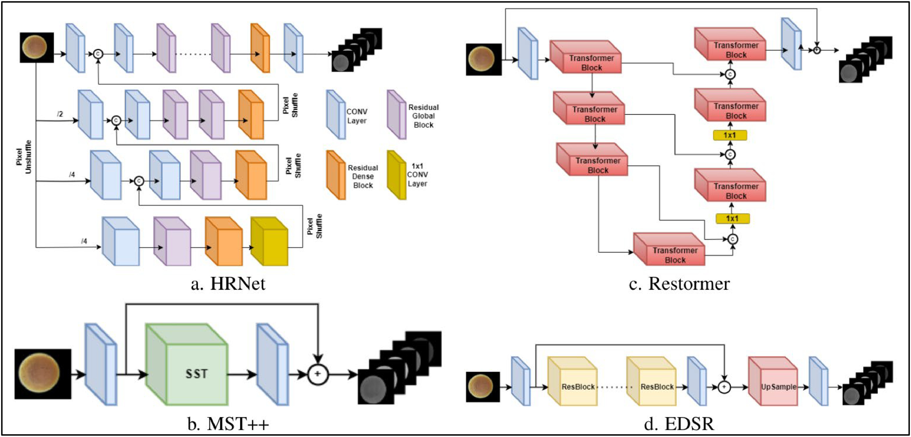

Education
BSc 2019 – 2023
MSc 2024 – 2025
PhD 2026 – Present
Research
My research focuses on improving the interpretability and efficiency of large language models (LLMs) and general AI systems. Previously, my research focused on computer vision, with an emphasis on hyperspectral image reconstruction for agricultural applications.
Publications
Selected publications only. For a more detailed publication history, please visit here
Your browser does not support the video tag.

Agro-Net: A Convolution-Attention Fusion based hyperspectral model for agro-food quality assessment
Ocean Monjur , Md Toukir Ahmed, Md Wadud Ahmed, Mohammed Kamruzzaman
CVPRW , 2025
Your browser does not support the video tag.

Agro-HSR: The first large-scale agricultural-focused hyperspectral dataset for deep learning-based image reconstruction and quality prediction
Ocean Monjur , Md Toukir Ahmed, Girish Chowdhary, Mohammed Kamruzzaman
Computers and Electronics in Agriculture , 2025
Your browser does not support the video tag.

A comprehensive review of deep learning-based hyperspectral image reconstruction for agri-food quality appraisal
Ocean Monjur , Alin Khaliduzzaman, Mohammed Kamruzzaman
Artificial Intelligence Review , 2025
Your browser does not support the video tag.

Deep learning-based hyperspectral image reconstruction for quality assessment of agro-product
Ocean Monjur , Mohammed Kamruzzaman
Journal of Food Engineering , 2024
Your browser does not support the video tag.

Hyperspectral image reconstruction for predicting chick embryo mortality towards advancing egg and hatchery industry
Ocean Monjur , Jason Lee Emmert, Girish Chowdhary, Mohammed Kamruzzaman
Smart Agricultural Technology , 2024